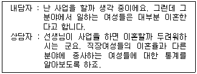
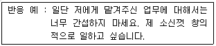
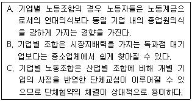
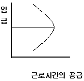
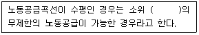
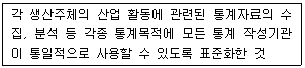
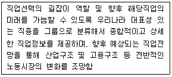

직업상담사-2급(구) (2003-08-10 기출문제)
1과목: 직업상담ㆍ심리학
1. 직업선택에 대한 로(Roe)의 이론 중 잘못 설명한 것은?
- 직업선택에서 개인의 욕구를 중요시하였다.
- 직업선택에서 초기아동기 경험을 중시하였다.
- 환상기, 잠정기, 현실기라는 진로발달의 3단계를 제시하였다.
- 직업을 여덟 개의 군집으로 나누고 각 군집에 해당하는 직업들의 목록을 작성했다.
(정답률: 알수없음)

2. 직무분석 자료의 특성과 가장 거리가 먼 것은?
- 직무분석 자료는 사실 그대로를 반영하여야 한다.
- 직무분석 자료는 가공하지 않은 원상태의 자료이어야 한다.
- 직무분석 자료는 과거와 현재의 정보를 다 활용해야 한다.
- 직무분석 자료는 논리적으로 체계화해야 한다.
(정답률: 알수없음)
3. 다음 중 직업상담자가 갖추어야 할 지식이라 할 수 없는 것은?
- 직업정보를 수집, 보충하여 전달하는 전략에 대한 지식
- 진로발달과 의사결정 이론에 대한 지식
- 여성과 남성의 변화하는 역할과 일, 가족, 여가의 관련성에 관한 지식
- 변화하는 가족기능과 부모의 욕구기대 충족에 도움이 되는 지식
(정답률: 알수없음)
4. 체계적 둔감화의 3단계 순서는?
- 근육 이완훈련 → 불안위계목록 작성 → 둔감화
- 둔감화 → 근육 이완훈련 → 불안위계목록 작성
- 불안위계목록 작성 → 둔감화 → 근육 이완훈련
- 근육 이완훈련 → 둔감화 → 불안위계목록 작성
(정답률: 알수없음)
5. 홀랜드의 육각형 모형에서 제시하는 주요 개념인 6가지 유형들 중 "어떤 쌍들은 다른 유형의 쌍들보다 공통점을 더 많이 가지고 있다"는 것을 나타내는 것은?
- 정체성
- 일관성
- 차별성
- 일치성
(정답률: 알수없음)
6. 수퍼(Super)의 직업발달 단계가 순서대로 연결된 것은?
- 성장기-탐색기-확립기-유지기-쇠퇴기
- 성장기-확립기-탐색기-유지기-쇠퇴기
- 탐색기-성장기-유지기-확립기-쇠퇴기
- 탐색기-유지기-성장기-확립기-쇠퇴기
(정답률: 알수없음)
7. 다음 중 작업자의 작업동기를 향상시켜 작업자의 몰입에 영향을 주는 요인이 아닌 것은?
- 직무만족의 향상
- 작업조건
- 의사결정의 참여
- 연령
(정답률: 알수없음)
8. 다음의 면담에서 직업상담자가 택한 개입의 방법은?

- 구체화시키기
- 논리적 분석
- 격려
- 재구조화
(정답률: 알수없음)
9. 스트레스와 직무수행의 관계를 가장 잘 나타낸 것은?
- 스트레스가 많을수록 직무수행이 떨어지는 일차함수 관계이다.
- 어느 수준까지는 스트레스가 많을수록 직무수행이 떨어지다가 어느 수준에 이르면 더 이상 직무수행이 떨어지지 않고 일정 수준을 유지한다.
- 스트레스 수준이 너무 낮거나 너무 높으면 직무수행은 떨어지는 역U자형 관계이다.
- 스트레스와 직무수행은 관계가 없다.
(정답률: 알수없음)
10. 우리나라에서 직업상담자의 주요활동 영역이 아닌 것은?
- 대학기관
- 노동부 지방관서
- 고용안정센터
- 인력은행
(정답률: 알수없음)
11. 심리검사에서 규준이 필요한 이유는?
- 준거참조검사에서 어떤 기준점수와 비교하여 기준점인 당락점수에 비추어 검사점수를 해석하기 위해서
- 다른 사람들의 검사점수를 참고로 하여 개인점수의 상대적 위치를 알아 검사점수의 상대적인 해석을 하기 위해서
- 심리검사의 실시와 채점 절차의 동일성을 유지하기 위해 검사자가 지켜야 하는 관련 세부규칙들을 정리하기 위해서
- 심리검사의 신뢰도와 타당도를 구하기 위해서 동일한 사람을 상대로 동일한 검사를 실시하고 그 검사가 무엇을 얼마나 정확하게 측정하는지를 알기 위해서
(정답률: 알수없음)
12. 다음 중 직무기술서에 일반적으로 포함되는 내용이 아닌 것은?
- 직무가 이루어지는 물리적, 심리적, 정서적 환경
- 감독의 형태, 작업의 양과 질에 관한 규정이나 지침
- 직무를 수행하는 사람에게 요구되는 자격요건
- 직무에서 사용하는 기계, 도구, 장비, 기타 보조 장비
(정답률: 알수없음)
13. 상담면접에서 질문을 사용하는 상담자의 요령으로서 적절한 것은?
- 질문은 가능한 한 개방적 형태를 띠어야 한다.
- '예' 혹은 '아니오'의 단답식 답변을 이끌어 낼 수 있는 질문을 하여야 한다.
- 한꺼번에 많은 정보를 얻기 위해서는 상담자는 질문공세를 펴야한다.
- 내담자을 충분히 이해하기 위해서는 '왜?'라는 질문을 자주 던져야 한다.
(정답률: 알수없음)
14. 다음 중 Holland의 모델에 근거한 검사가 아닌 것은?
- 자가 흥미탐색 검사(SDS)
- 스트롱-캠벨 흥미검사(SVIB-SCII)
- 경력의사결정 검사(CDM)
- 경력개발검사(CDI)
(정답률: 알수없음)
15. 직무와 관련된 스트레스 요인 중에서 기계화 및 자동화시대에 살고 있는 오늘날 가장 위험한 스트레스 요인이 될 수 있는 것은?
- 지루함
- 역할갈등
- 생산압력
- 개인주의
(정답률: 알수없음)
16. 생애주기에 관한 연구들의 결과가 주는 시사점이 아닌 것은?
- 모든 연령수준별로 일에 대한 이해, 일을 수행하기 위한 훈련과 자격, 원하는 직업을 얻는 방법, 생활과 직업의 관계를 인식해야 한다.
- 특히 10대에게는 직업에 필요한 적당한 기술과 훈련이 필요하다.
- 한번 얻은 직업정보는 시간과 상황에 관계없이 계속 유지되어야 한다.
- 여성과 노인들을 위한 취업정보체계가 필요하다.
(정답률: 알수없음)
17. 직업상담 과정에서 내담자와 상담자간의 관계 형성에 영향을 줄 수 있는 조건이 아닌 것은?
- 공감적 이해
- 무조건적 수용
- 친화감 형성
- 질문과 해석
(정답률: 알수없음)
18. 다음 중 직업상담사에게 요구되는 역할이 아닌 것은 ?
- 직업정보를 분석하고 구인, 구직 정보제공
- 구직자의 직업적 문제를 진단하고 해결하도록 돕는 지원자
- 노동통계를 분석하여 새로운 직업전망을 예견하여 미래의 취업정보를 제공
- 직업상담실을 관리하며 구직자의 행동을 조정하는 통제자
(정답률: 알수없음)
19. 비지시적 상담을 원칙으로 자아와 일에 대한 정보부족 혹은 왜곡에 초점을 맞춘 직업상담은?
- 정신분석 직업상담
- 내담자 중심 직업상담
- 행동적 직업상담
- 발달적 직업상담
(정답률: 알수없음)
20. 경력 개발 이론 중 경력 개발 단계를 성장, 탐색, 확립, 유지, 쇠퇴로 5단계 이론을 주장한 사람은 누구인가?
- Bordin
- Colby
- Super
- Parsons
(정답률: 알수없음)
21. 다음 중 직장인들의 경력개발을 위하여 조직에서 사용하는 프로그램이 아닌 것은?
- 사내 공모제
- 후견인(mentoring) 프로그램
- 직무평가
- 직무순환
(정답률: 알수없음)
22. 다음 중 검사의 타당도에 관한 설명으로 틀린 것은?
- 교차타당도의 결과가 적어도 통계적으로 의의(意義)있는 관계보다는 우연적 관계를 보여 주어야 할 것이다.
- 검사를 사용했을 때 단순히 집단의 기본 구성비율(base rate)에 의하여 우연히 맞힐 수 있는 최대 확률 보다는 더 정확한 결정을 내릴 수 있어야 한다.
- 검사는 어느 정도 실용도를 가지고 있어야 한다. 즉, 검사를 사용했을 때 얻는 이익은 그 실용도를 능가해야 할 것이다
- 검사는 결정과정에 있어서 다른 정보자원이 제공할 수 없는 독특한 정보를 제공할 수 있어야 한다.
(정답률: 알수없음)
23. 직업지도 프로그램을 개발해서 운영하는데 있어서 적합하지 않은 시각은?
- 미래사회를 보는 시각
- 노동시장과의 연계
- 생애주기 변화에 대한 인식제고
- 개인의 사회경제적 지위
(정답률: 알수없음)
24. 지능지수보다 정서관리를 잘하는 것이 개인의 적응을 결정하는 주요 요소라는 이론이 있다. 다음 중 그런 능력을 의미하는 정서지능에 포함되지 않는 영역은?
- 자신의 정서를 인식하고 관리하는 능력
- 상황을 분석하고 판단하는 능력
- 타인과 원만하게 관계를 유지하는 능력
- 자기기분을 북돋아 주고 동기화 시키는 능력
(정답률: 알수없음)
25. Williamson이 제시한 상담과정의 순서가 올바른 것은?
- 분석-진단-종합-처방-상담-추수지도
- 분석-종합-진단-처방-상담-추수지도
- 진단-분석-종합-처방-상담-추수지도
- 분석-진단-처방-종합-상담-추수지도
(정답률: 알수없음)
26. 진로발달의 이론들 가운데 성차에 대한 설명이 시도되고 있는 이론은?
- 인지적 정보처리 접근
- 사회인지적 조망
- 자기효능감이론
- 가치중심적 진로접근모형
(정답률: 알수없음)
27. 신규입직자를 대상으로 하는 상담으로서, 조직문화, 인간관계, 직업예절, 직업의식과 직업관 등에 관한 정보를 제공하고 필요시 직업지도 프로그램에 참여케 하는 등의 상담은?
- 직업전환 상담
- 직업적응 상담
- 구인구직 상담
- 경력개발 상담
(정답률: 알수없음)
28. 비합리적 신념의 논박을 통한 사고와 감정의 변화를 도모하는 상담이론은?
- 인지행동적 상담
- 현실치료
- 교류분석상담
- 합리적 정서적 상담
(정답률: 알수없음)
29. 정신역동상담의 주요 기술이 아닌 것은?
- 저항
- 훈습
- 해석
- 선택
(정답률: 알수없음)
30. 다운사이징 시대의 경력개발 방향과 맞지 않는 것은?
- 조직구조의 수평화로 개인의 자율권 신장과 능력개발에 초점을 두어야 한다.
- 기술, 제품, 개인의 숙련주기가 짧아져서 경력개발은 단기, 연속 학습단계로 이어짐
- 일시적이 아니라 계속적이고 평생학습으로의 경력개발이 요구된다.
- 경력변화의 기회가 많아져서 조직내 수직적 이동과 장기고용이 용이해 진다.
(정답률: 알수없음)
31. 효과적 상담에 장애가 되는 면담행동은?
- 내담자와 유사한 언어를 사용하는 행동
- 분석하고 충고하는 행동
- 비방어적 태도로 내담자를 편안하게 만드는 행동
- 경청하는 행동
(정답률: 알수없음)
32. 긴즈버그(Ginzberg)의 직업발달 단계 중 자신의 결정을 구체화시키고 보다 세밀한 계획을 세우며 고도로 세분화 ㆍ 전문화된 의사결정을 하게 되는 단계는?
- 전환단계
- 탐색단계
- 결정단계
- 특수화단계
(정답률: 알수없음)
33. 다음 중 분류변인을 옳게 설명한 것은?
- 인과성의 추론이 가능하다.
- 분류변인을 독립변인으로 사용하면 외적 타당도가 높아진다.
- 연령, 지능, 성격특성, 태도 등과 같이 피험자의 속성에 관한 개인차 변인들을 말함
- 내적 타당도가 높다.
(정답률: 알수없음)
34. 상담에 관련된 다음 설명 중 맞는 것은?
- 즉시성(immediacy)이란 내담자의 질문에 대해 즉각적으로 반응하는 것을 의미한다.
- 내담자에게 피드백(feedback)을 줄 때는 대체로 부정적인 것부터 주는 것이 좋다.
- 상담을 진행하면서 시간, 내담자의 행동 및 절차상의 제한, 상담목표 등에 대해 논의하는 것을 구조화(structuring)라고 한다.
- 짧은 시간에 구체적인 정보를 많이 수집하려고 할 때는 폐쇄형질문(closedquestion) 보다 개방형질문(open question)이 효과적이다.
(정답률: 알수없음)
35. 직무분석의 절차가 바른 것은?
- 배경정보의 수집 → 직무정보의 수집 → 직무정보의검토 → 직무분석 목적의 결정 → 직무기술서 및 직무명세서의 작성
- 직무분석 목적의 결정 → 배경정보의 수집 → 직무정보의 수집 → 직무기술서 및 직무명세서의 작성 → 직무정보의 검토
- 직무분석 목적의 결정 → 배경정보의 수집 → 직무정보의 수집 → 직무정보의 검토 → 직무기술서 및 직무명세서의 작성
- 배경정보의 수집 → 직무정보의 수집 → 직무분석 목적의 결정 → 직무정보의 검토 → 직무기술서 및 직무명세서의 작성
(정답률: 알수없음)
36. 다음 직무분석의 주요내용 중 수행업무의 분석내용이 아닌 것은?
- 작업 목적
- 작업내용
- 작업시간
- 작업조건
(정답률: 알수없음)
37. 상담자가 자신이 직접 경험하지 않고도 다른 사람의 감정을 거의 같은 내용과 수준으로 이해하는 능력을 무엇이라고 하는가?
- 공감
- 수용
- 해석
- 직면
(정답률: 알수없음)
38. 다음의 제시된 반응 예에 대한 상담자의 공감적 이해의 수준 중 가장 높은 수준은 어느 것인가?

- 자네가 알아서 할 일을 내가 부당히 간섭한다고 생각하지 말게.
- 자네가 지난번에 처리했던 일이 아마 잘못 됐었지?
- 믿고 맡겨준다면 잘할 수 있을 것 같은데, 간섭받는 다는 기분이 들어 불쾌한 게로군.
- 기분이 나쁘더라도 상사의 지시대로 해야지.
(정답률: 알수없음)
39. 직무분석의 결과 얻어진 직무명세서에 대해서 가장 잘 설명한 것은?
- 직무에서 어떤 활동이나 과제가 이루어지는가를 기술한다.
- 직무 수행자에게 요구되는 기술, 지식, 능력 등 인적요건들을 기술한다.
- 직무 자체와 작업환경에 관한 정보를 제공하여 직무파악에 활용한다.
- 과제 항목표를 이용한 과제중심 직무분석법에 의해서 만들어진다.
(정답률: 알수없음)
40. 직업대안 선택 과정에 생길 수 있는 문제 중에서 내담자가 선택할 수 없게 만드는 원인은?
- 낮은 수준의 좌절
- 부적절한 흥미와 과제
- 정보의 평가절하
- 위험부담을 하지 않으려 함
(정답률: 알수없음)
2과목: 직업정보론(노동시장론 포함)
41. 고용안정정보망 워크넷(Work-Net)에서 "구인광고"란의 특성으로 가장 바르게 설명한 것은?
- 기업체가 고용안정센터를 경유하지 않고 직접 구인광고를 할 수 있도록 제공한 곳이다.
- 주요 신문에 실린 구인광고를 제공하는 곳이다.
- 구인 중에서 미 채용된 구인을 따로 모아 신속한 채용을 돕는 곳이다.
- 주요 인터넷 채용업체에 실린 구인내용을 수집하여 구직자에게 제공하는 곳이다.
(정답률: 알수없음)
42. 기업별 노동조합에 대한 다음 설명 중 옳은 것을 바르게 묶어 놓은 것은?

- A, B
- A, C
- B, C
- A, B, C
(정답률: 알수없음)
43. 1998-1999년의 경제위기동안에 두드러진 우리노동시장의 특징으로 틀린 것은?
- 해고분쟁의 증가
- 외국인 노동자 대량유입
- 근로자의 평균근속기간의 감소
- 비정규직(임시ㆍ일용직) 고용비중의 증가
(정답률: 알수없음)
44. 『상용근로자 5인 이상 사업체에 종사하는 근로자의 직종별, 학력별, 임금계층별 등 다양한 속성별 임금, 근로시간 등 각종 근로조건에 관한 통계를 제공』하는 직업정보원은?
- 임금구조기본통계조사
- 매월노동통계조사
- 소규모사업체근로실태조사
- 기업체노동비용조사
(정답률: 알수없음)
45. 노동공급곡선이 그림과 같을 때 임금이 W0 이상으로 상승한 경우의 설명으로 옳은 것은?

- 대체효과가 소득효과를 압도한다.
- 소득효과가 대체효과를 압도한다.
- 대체효과가 규모효과를 압도한다.
- 규모효과가 대체효과를 압도한다.
(정답률: 알수없음)
46. 만약 어느 상점에 배달원 3명, 판매원 2명, 회계원 1명이 일하고 있을 때 직무분석 결과로 옳은 것은?
- 임무(duty)는 모두 3개이다.
- 작업(task)은 모두 3개이다.
- 직무(job)는 모두 3개이다.
- 직위(position)는 모두 3개이다.
(정답률: 알수없음)
47. 공공취업알선기관에서 사용하는 직업분류의 세분류와 세세분류의 관계에 대한 설명으로 틀린 것은?
- 둘 다 직업코드로 알선에 사용할 수 있다.
- 세세분류가 있는 경우에는 세세분류로 기입하는 것을 원칙으로 한다.
- 경력자로 세세분류의 직업을 모두 다 할 수 있을 때는 세분류를 사용하도록 한다.
- 신입으로 세세분류를 알 수 없을 경우 세분류를 사용할 수 있다.
(정답률: 알수없음)
48. 다음 중 실질임금의 정의로 적당한 것은?
- 한 가구의 총임금을 말한다.
- 물가수준을 반영하여 구매력으로 평가한 임금을 말한다.
- 세금공제후 노동자가 실제 지급받는 임금을 말한다.
- 작업시간과 작업의 난이도를 반영한 임금을 말한다.
(정답률: 알수없음)
49. 직업정보 수집 시 유의사항으로 옳은 것은?
- 자료의 출처와 저자, 발행년도를 반드시 명기하여야 하나 수집자는 기입하지 않아도 된다.
- 수집된 정보라 할지라도 항상 유효하지 않기 때문에 지속적인 정보의 보완이 필요하다.
- 직업정보를 수집하기 위하여는 옮겨 쓰기, 오려붙이기, 녹음, 입력, 재구성하기 등이 필요하다.
- 우연히 발견한 것과 외부로부터 자료를 모아두는 것도 직업정보의 수집이다.
(정답률: 알수없음)
50. 다음 중 노동시장에서 존재하는 임금격차에 대한 설명으로 틀린 것은?
- 노동생산성의 차이, 근로자의 공헌도 차이 등에 의해서 임금격차가 발생하며, 직종간 노동이동이 자유롭지 못할수록 직종별 임금격차는 크게 발생할 것이다.
- 최근 들어 성별ㆍ직종별 임금격차는 점점 축소되는 경향을 보이고 있으며, 대학졸업자들이 양산됨에 따라 학력별 임금격차 역시 축소되는 경향을 보일 것이다.
- 노동시장에서 노동공급이 노동수요를 초과하는 정도가 클수록 임금격차는 확대될 것이며, 반대일 경우에는 임금격차가 축소될 것이다.
- 요즘과 같은 대졸자 취업난 시대에도 많은 기업들이 대졸자에게 고임금을 지급하는 이유는 임금격차를 설명하는 효율임금이론과 관련된 것으로서 기업의 이윤극대화 목표와는 무관하다.
(정답률: 알수없음)
51. 최근 연장근로 등 일정량 이상의 노동을 기피하는 풍조가 확산되고 있다. 이러한 현상에 대한 분석도구로 잘 사용될 수 있는 것은?
- 최저임금제
- 후방굴절형 노동공급곡선
- 화폐적 환상
- 노동의 수요독점
(정답률: 알수없음)
52. 직업소개의 일반 원칙이 아닌 것은?
- 자유의 원칙
- 공익의 원칙
- 보호의 원칙
- 근로조건명시의 원칙
(정답률: 알수없음)
53. 직종간 고용보험 피보험자 이동(2003년)에서 상대적으로 직종내 이동이 많은 대분류 직업은?
- 고위임직원 및 관리자
- 전문가
- 기술공 및 준전문가
- 사무직원
(정답률: 알수없음)
54. 다음 중 기본급 임금체계의 유형으로 볼 수 없는 것은?
- 연공급
- 부가급
- 직능급
- 직무급
(정답률: 알수없음)
55. 한국표준직업분류(2000)에서『소비자의 구매 패턴과 소비유형을 파악하여 시장성 있는 물품을 선정하고 선정된 물품을 생산하는 제조업체와 매매조건, 수수료 등을 협의하고 계약을 체결하는 자를 말한다. 경우에 따라서는 외국바이어를 대신하여 물품의 생산처 선정부터 주문, 선적까지 처리 한다』에 해당되는 직업은?
- 상품중개인
- 위탁중개인
- 물류관리사
- 머천다이저
(정답률: 알수없음)
56. 노동수요의 탄력성이 커지는 경우에 대한 설명으로 틀린 것은?
- 생산된 상품의 수요 탄력성이 크다.
- 노동이외의 다른 생산요소가 노동과 쉽게 대체될 수 있다.
- 노동 이외의 다른 생산요소의 공급이 탄력적이다.
- 노동 이외의 요소비용이 전체 비용에서 차지하는 비율이 크다.
(정답률: 알수없음)
57. 노동 정책에 대한 설명으로 틀린 것은?
- 노동정책의 수단은 강제, 지도, 원조, 조정, 공공서비스에 의한 것으로 나눌 수 있다.
- 노동정책에는 노사관계 또는 임금복지와 같이 사회정책을 가지는 부문도 있다.
- 노동정책은 근로자의 보호정책에서 출발하여 대부분이 사용자에 대한 규제이다.
- 현재의 우리나라 노동정책은 간접적인 노동자 지원정책에서 직접적인 지원정책으로 바뀌고 있다.
(정답률: 알수없음)
58. 한국표준직업분류상 직업의 대분류 중 ISCED 국제표준교육분류의 직무능력 수준과 무관한 것은?
- 사무종사자
- 판매종사자
- 기능원 및 관련 기능 종사자
- 군인
(정답률: 알수없음)
59. 신규취업자의 노동력 수급상황, 채용, 구인 및 이직상황은 다음 중 어떤 고용정보에 속하는가?
- 경제 및 산업동향에 관한 정보
- 노동시장, 고용 및 실업동향에 관한 정보
- 근로조건에 관한 정보
- 고용관리에 관한 정보
(정답률: 알수없음)
60. 클로즈드 숍(closed shop) 제도 하에서의 노동공급곡선의 형태는?
- 우상향 한다.
- 우하향 한다.
- 수직이다.
- 수평이다.
(정답률: 알수없음)
61. 다음 중 최저임금제 도입의 목적으로 볼 수 없는 것은?
- 임금격차 해소
- 구매력 증대
- 생계비 보장
- 경영합리화 유도
(정답률: 알수없음)
62. 다음 중 경제활동인구의 조사에서 취업자에 해당하는 사람은?
- 도박으로 생계를 이어가는 주부
- 봉사활동에 전념하는 사회사업가
- 증권투자로 소득을 얻는 사람
- 간호사 자격증이 없이 간호원으로 취업한 자
(정답률: 알수없음)
63. 다음「시장조사 분석가」직업에 대한 설명으로 틀린 것은?
- 충분한 양의 제품생산에서 고객만족을 중시하는 경영체계로 기업경영이 바뀌면서 중요해지는 직업이다.
- 정확한 판단력이 필요하여 통계적 기법보다는 언어적 기법을 사용한다.
- 설문서 작성, 표본추출 방법, 보고서의 양식 등은 조사이전에 명기하여야 하는 업무가 있다.
- 연령. 자격 등에 제한이 없으나, 일반적으로 전문적 지식이 요구된다.
(정답률: 알수없음)
64. 일정기간 동안 구인신청이 들어온 모집인원 중 해당 월말 현재 알선가능한 인원수의 합을 무엇이라 하는가?
- 구인인원
- 유효구인인원
- 신규구인인원
- 유효구인배율
(정답률: 알수없음)
65. 노동조합이 가장 강조하는 임금수준의 결정기준은?
- 생계비기준
- 지불능력기준
- 노동생산성기준
- 비교임금기준
(정답률: 알수없음)
66. 다음 중 고용보험법에서 규정하고 있는「고용안정사업」에 관한 설명으로 틀린 것은?
- 재취업을 위한 직업훈련 지원
- 고용정보제공. 직업소개 사업
- 고용조정지원 사업
- 고령자 등 취업 곤란자에 대해 고용을 촉진하기 위한 유인제도 실시
(정답률: 알수없음)
67. 다음 ( )안에 알맞은 것은?

- A. Marshall
- J.R. Hicks
- W.A. Lewis
- A. Smith
(정답률: 알수없음)
68. 다음의 내용은 무엇에 대한 설명인가?

- 생산분류
- 표준산업분류
- 한국표준직업분류
- 산업활동
(정답률: 알수없음)
69. 다음 중 자발적 노동이동(voluntary mobility)에 따른 순수익의 현재가치(present value)를 결정해주는 요인이 아닌 것은?
- 새로운 직장의 고용규모
- 새 직장에서의 예상 근속년수
- 장래의 기대되는 수익과 현 직장에서의 수익의 차를 현재가치로 할인해 주는 할인율
- 노동이동에 따른 직/간접 비용
(정답률: 알수없음)
70. 다음의 직업훈련과정 가운데 근로자에게 직업에 필요한 직무수행능력의 부족을 보충하기 위하여 실시하는 직업훈련은?
- 양성훈련과정
- 향상훈련과정
- 전직훈련과정
- 재훈련과정
(정답률: 알수없음)
71. 2000년에 발간된 취업알선 직업코드설명집의 목적과 가장 거리가 먼 것은?
- 취업알선 효율성 제고
- 통계의 신뢰성 확보
- 동일한 직무에 동일한 직업코드의 사용
- 통계의 기준 제시
(정답률: 알수없음)
72. 다음 중 필립스(Phillips, A. W)곡선의 의미는?
- 실업률과 가격인플레이션간의 상충관계
- 실업률과 성장률간의 상충관계
- 실업률과 인구증가률간의 상호관계
- 실업률과 사망률간의 상호관계
(정답률: 알수없음)
73. 한국 노동시장에서 인력난과 유휴인력이 공존하는 이유로서 가장 적합한 것은?
- 근로자의 학력격차의 확대
- 외국 산업연수생 제도 도입
- 기업규모별 임금격차의 확대
- 미숙련노동력의 무제한적인 공급
(정답률: 알수없음)
74. 다음 중 기업이 종업원주식소유제 혹은 종업원지주제를 도입함에 따른 효과가 아닌 것은?
- 공격적 기업 인수 및 합병에 대한 효과적 방어수단
- 기업금융 및 재무구조의 건전화 수단
- 종업원의 기업인수 지원을 통한 고용안정 도모
- 노사관계 악화
(정답률: 알수없음)
75. 일반적으로 불경기일 때 기업은 생산비 절감을 위하여 임금을 삭감한다. 그러나 일부 기업들은 이것을 감수하고도 임금을 삭감하지 않고 고임금 정책을 유지하고 있다. 이러한 기업의 임금정책을 무엇이라 하는가?
- 임금의 하방경직성 원칙
- 고임금 정책
- 효율임금정책
- 임금협상정책
(정답률: 알수없음)
76. 임금상승이 한 개인의 여가와 노동시간에 미치는 효과 중에서 소득효과가 대체효과보다 클 경우 나타나는 것은?
- 여가시간은 감소하지만 노동시간이 증가한다.
- 여가시간과 노동시간이 함께 증가한다.
- 여가시간과 노동시간이 함께 감소한다.
- 여가시간은 증가하지만 노동시간은 감소한다.
(정답률: 알수없음)
77. 기업문화에 관한 7S모형의 구성요소 중 다른 문화 구성요소에 지배적인 영향을 줌으로써 기업문화 형성에 가장 중심적인 위치를 차지하는 요소는?
- 공유가치(shared value)
- 전략(strategy)
- 관리시스템(system)
- 리더십 스타일(style)
(정답률: 알수없음)
78. 다음은 무엇에 대한 설명인가?

- 직업지도 핸드북
- 직업의 세계(시청각 자료)
- 미래의 직업정보전달체계 KNOW
- 한국직업전망서
(정답률: 알수없음)
79. 응시하고자 하는 종목에 관한 공학적 기술이론 지식을 가지고 설계, 시공, 분석 등의 기술 업무를 수행할 수 있는 능력의 유무를 평가하는 국가기술 자격은?
- 기술사
- 기능장
- 기사
- 산업기사
(정답률: 알수없음)
80. 현장관리 및 기능 인력의 지도, 감독을 수행하는 국가기술자격의 등급은?
- 기술사
- 기능장
- 기사
- 산업기사
(정답률: 알수없음)
3과목: 노동관계법규
81. 정년퇴직자의 재고용에 관한 설명으로 옳은 것은?
- 새롭게 근로계약을 체결하는 것이므로 임금은 종전과 달리 결정할 수 있다.
- 연차휴가일수 계산에 있어서 퇴직 전의 근로기간을 제외할 수 없다.
- 정년 퇴직자를 재고용하는 경우 퇴직금 계산은 퇴직 전의 기간까지 근속기간에 포함하여야 한다.
- 사업주는 정년퇴직자가 그 사업장에 다시 취업하기를 원하는 경우 다른 취업희망자에 우선하여 고용하여야 한다.
(정답률: 알수없음)
82. 고용정책기본법의 직접적인 목적이 아닌 것은?
- 국민 개개인의 능력을 최대한 개발, 발휘할 수 있도록 한다.
- 노동시장의 효율성 제고와 인력의 수급균형을 도모한다.
- 국가의 직업지도 및 직업소개 기능을 강화한다.
- 근로자의 고용안정 및 경제적. 사회적 지위 향상을 목적으로 한다.
(정답률: 알수없음)
83. 남녀고용평등법상의 "차별"에 해당하지 않는 것은?
- 성별을 사유로 합리적인 이유 없이 근로의 조건을 달리하는 것
- 가족상의 지위를 사유로 합리적인 이유 없이 불이익한 조치를 취하는 것
- 현존하는 차별을 해소하기 위하여 사업주가 잠정적으로 특정성을 우대하는 조치를 취하는 경우
- 사업주가 채용 또는 근로의 조건은 동일하게 적용하더라도 그 조건을 충족시킬 수 있는 남성 또는 여성이 다른 한 성에 비하여 현저히 적고 그로 인하여 특정성에게 불리한 결과를 초래하며 그 기준이 정당한 것임을 입증할 수 없는 경우
(정답률: 알수없음)
84. 근로자직업훈련촉진법상 직업능력개발훈련에서 특히 중요시되어야 할 대상이 아닌 것은?
- 고령자
- 장애인
- 진학한 청소년
- 제조업의 생산직 근로자
(정답률: 알수없음)
85. 남녀고용평등법상 고용에 있어서 남녀의 평등한 기회와 대우를 보장하여야 할 사항이 아닌 것은?
- 모집
- 임금
- 근로시간
- 교육
(정답률: 알수없음)
86. 헌법상의 근로의 권리의 내용에 해당되지 않는 것은?
- 국가의 고용증진의무
- 근로조건기준의 법정주의
- 여자와 연소자의 근로의 특별보호
- 국가유공자 등에 대한 근로기회의 평등보장
(정답률: 알수없음)
87. 고용정책심의회에 관한 설명으로 틀린 것은?
- 고용정책심의회는 특별시, 광역시, 도에 설치한다.
- 위원장 1인을 포함한 30인 이내의 위원으로 구성 한다
- 재적위원 과반수의 출석과 출석위원 과반수의 찬성으로 의결한다.
- 정책심의회는 위원의 구성도 근로자와 사업주를 대표하는 자와 전문가 그리고 관계 중앙행정기관의 차관이 된다.
(정답률: 알수없음)
88. 다음 중 근로관계의 소멸사유가 아닌 것은?
- 근로자의 사망
- 계약기간의 만료
- 사용자의 사망
- 경영상 이유에 의한 해고
(정답률: 알수없음)
89. 고용정책기본법상의 고용정책기본계획에 직접적으로 포함되는 내용이 아닌 것은?
- 고용동향과 인력의 수급전망에 관한 사항
- 고용에 관한 국가시책의 기본이 되는 사항
- 직업능력개발훈련시설의 설치 및 확충에 관한 사항
- 인력의 수요와 공급에 영향을 미치는 산업정책 동향에 관한 사항
(정답률: 알수없음)
90. 다음 중 근로자공급사업의 허가의 유효기간은 얼마인가? (단, 갱신하지 않을 경우)
- 1년
- 2년
- 3년
- 5년
(정답률: 알수없음)
91. 보험관계의 성립ㆍ 소멸신고 및 피보험자격의 취득ㆍ 상실신고는 각각의 해당일로부터 며칠 이내에 신고하여야 하는가?
- 7일, 7일
- 7일, 14일
- 14일, 7일
- 14일, 14일
(정답률: 알수없음)
92. 근로3권에 관한 설명 중 맞는 것은?
- 근로자는 근로조건의 향상을 위하여 자주적인 단결권, 단체교섭권, 단체행동권을 가진다.
- 공무원인 근로자도 원칙적으로 근로3권을 가지며, 공공복리를 위해 권리가 제약되는 경우가 있다.
- 주요방위산업체의 근로자는 국가안보를 위해 당연히 단체행동권이 인정되지 않는다.
- 미취업근로자 개개인에게 주어지는 구체적 권리이다.
(정답률: 알수없음)
93. 산전후휴가급여에 대한 설명으로 틀린 것은?
- 산전후 휴가급여는 해당근로자의 통상임금으로 지급한다.
- 산전후휴가 종료일 이전에 피보험단위기간이 180일 이상이어야 한다.
- 휴가개시 직전의 통상임금이 최저임금 미만일 때에는 최저임금으로 지급한다.
- 사업주가 60일을 초과하는 부분에 대하여 급여를 지급한 경우에는 산전후 휴가급여를 지급하지 아니한다.
(정답률: 알수없음)
94. 구직급여의 수급요건에서의 피보험단위기간에 관한 설명 중 맞는 것은?
- 기준기간은 이직일 이전 18월간이며 피보험단위기간은 통산하여 180일 이상일 것.
- 기준기간은 이직일 이전 24월간이며 피보험단위기간은 통산하여 180일 이상일 것.
- 기준기간은 이직일 이전 18월간이며 피보험단위기간은 통산하여 150일 이상일 것.
- 기준기간은 이직일 이전 24월간이며 피보험단위기간은 통산하여 150일 이상일 것.
(정답률: 알수없음)
95. 근로기준법상 근로계약체결 시에 서면으로 명시해야 할 사항이 아닌 것은?(단, 단시간근로자는 제외한다.)
- 근로시간의 길이
- 임금의 구성항목
- 임금의 계산방법
- 임금의 지불방법
(정답률: 알수없음)
96. 고령자고용촉진법상 용어에 대한 설명 중 틀린 것은?
- 고령자는 인구ㆍ취업자의 구성 등을 고려하여 대통령령으로 정하는데 현재는 55세 이상인 자를 말한다.
- 사업주라 함은 근로자를 사용하여 사업을 행하는 자를 말한다.
- 근로자라 함은 노동조합 및 노동관계조정법 상의 근로자를 말한다.
- 기준고용율이라 함은 사업장에서 상시 사용하는 근로자를 기준으로 하여 사업주가 고령자의 고용촉진을 위하여 고용하여야 할 법령상의 비율을 말한다.
(정답률: 알수없음)
97. 근로기준법상 취업규칙의 작성과 변경에 관한 설명으로 맞는 것은?
- 취업규칙의 변경에는 반드시 노동조합의 동의를 필요로 한다.
- 취업규칙의 변경으로 근로자가 불리하게 되는 경우에는 노동조합(근로자 과반수로 조직원 노동조합이 있는 경우) 또는 근로자과반수의 동의를 필요로 한다.
- 취업규칙은 사용자와 근로자가 합의로 작성한다.
- 취업규칙의 작성의 경우 노동조합의 동의를 필요로 한다.
(정답률: 알수없음)
98. 직업안정기관 외의 자가 행하는 직업안정사업에서는 일정한 행정기관에서 신고나 등록, 허가를 받아야 하는데 그 연결이 잘못된 것은?
- 국내무료직업소개사업 - 시장ㆍ 군수ㆍ 구청장에게 신고
- 국내유료직업소개사업 - 노동부장관에게 등록
- 국외에 취업할 근로자모집 - 노동부장관에게 신고
- 국내근로자공급사업 - 노동부장관의 허가
(정답률: 알수없음)
99. 직업안정법에 관한 설명 중 틀린 것은?
- 직업소개라 함은 구인 또는 구직의 신청을 받아 구인자와 구직자간에 고용계약의 성립을 알선하는 것을 말한다.
- 직업지도라 함은 취직하고자 하는 자의 능력과 소질에 적합한 직업의 선택을 용이하게 하기 위하여 실시하는 직업적성검사, 직업정보의 제공, 직업상담, 실습, 권유 또는 조언 기타 직업에 관한 지도를 말한다.
- 모집이라 함은 근로자를 고용하고자 하는 자가 취업하고자 하는 자에게 피용자가 되도록 권유하거나 다른 사람으로 하여금 권유하게 하는 것을 말한다.
- 무료직업소개사업은 회비만 받고 행하는 직업소개사업을 말한다.
(정답률: 알수없음)
100. 근로자직업훈련촉진법상의 직업능력개발훈련에 관한 설명 중 옳은 것은?
- 직업능력개발훈련은 18세 미만인 자에게는 실시할 수 없다.
- 직업능력개발훈련의 대상에는 미취업근로자뿐만 아니라 취업중인 근로자도 포함.
- 직업능력개발훈련은 교육관계법에 의한 학교교육과는 관계없이 독자적으로 실시되어야 한다.
- 직업능력개발훈련을 받는 훈련생이 훈련 중에 그 훈련으로 인하여 재해를 입은 경우에는 보상받을 수 없다
(정답률: 알수없음)